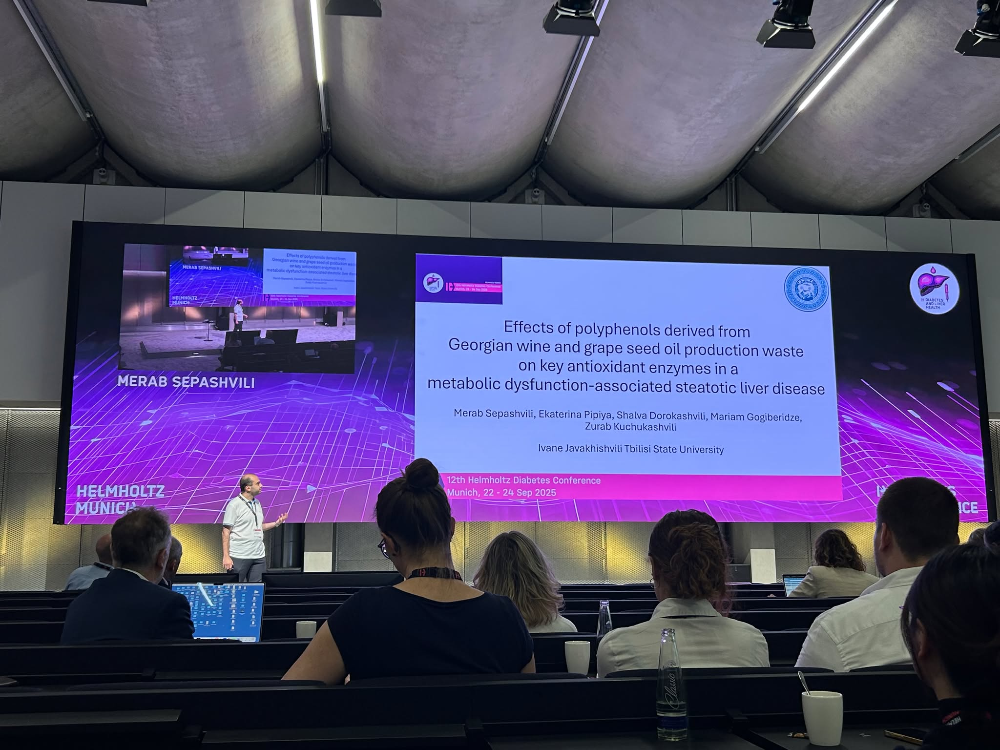

Exciting news! Merab Sepashvili, a young member of GeBA, attended the 12th Helmholtz Diabetes Conference in Munich (Sept 22–24, 2025).
As a PhD student at Tbilisi State University, Merab presented his ongoing research in the Applied Biomedicine and Biotechnology Laboratory, focusing on metabolic syndrome and non-alcoholic fatty liver disease. The conference unites leading scientists, clinicians, and industry experts from around the world, making it one of Europe’s top platforms for translational diabetes research.
Wishing Merab and all the young researchers, members of Georgian Biotechnology Association, continued success in their scientific careers!
